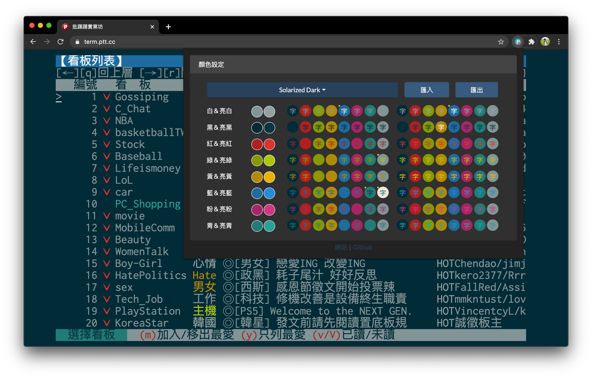
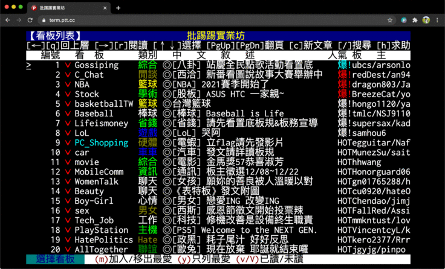
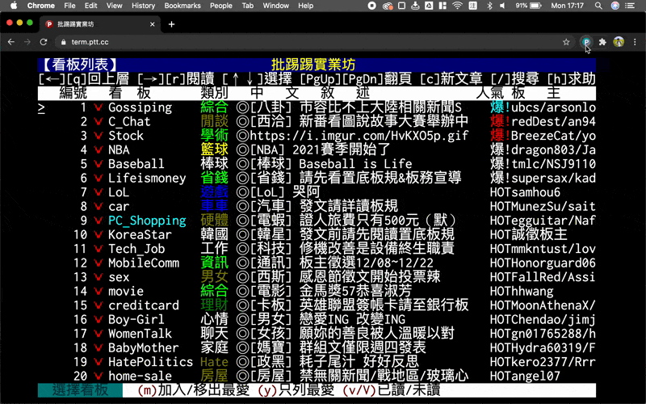
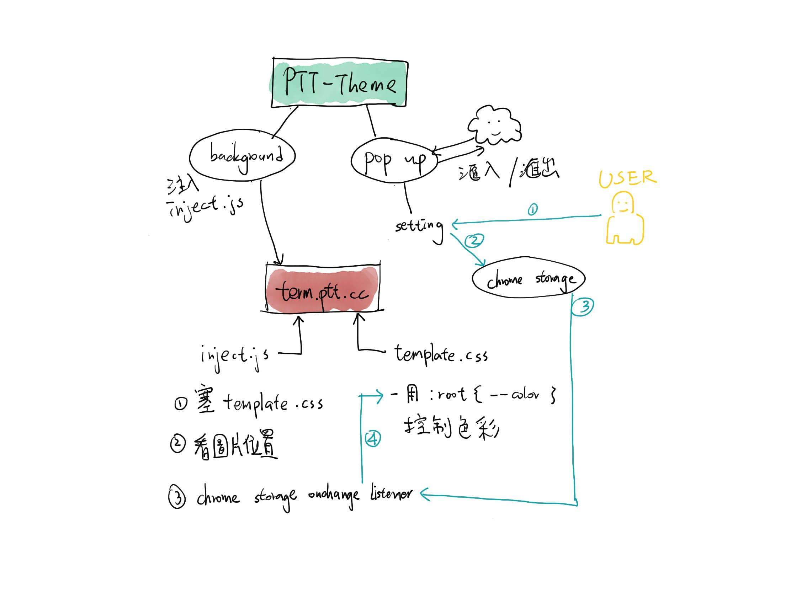

PTT Theme
Introduction
PTT (⇲ wikipedia) is the largest terminal-based bulletin board system (BBS) based in Taiwan. Also, it is recognized as the most influential online forum in Taiwan. However, it comes with an unfavorable old-school color theme.
One Day, I came up with the idea of applying the “text color modification” function in almost every code editor to PTT and started developing this extension. With this extension, users can simply select the built-in theme to change the default color:
(Original/Solarized Dark/Argonaut/Solarized Light/Expresso)
or customize it by themselves:
How does it works?
This extension would insert a new CSS file, and use JavaScript to dynamiclly update the color. If you are interested about the detail or want to contribute, please visit the GitHub Page.